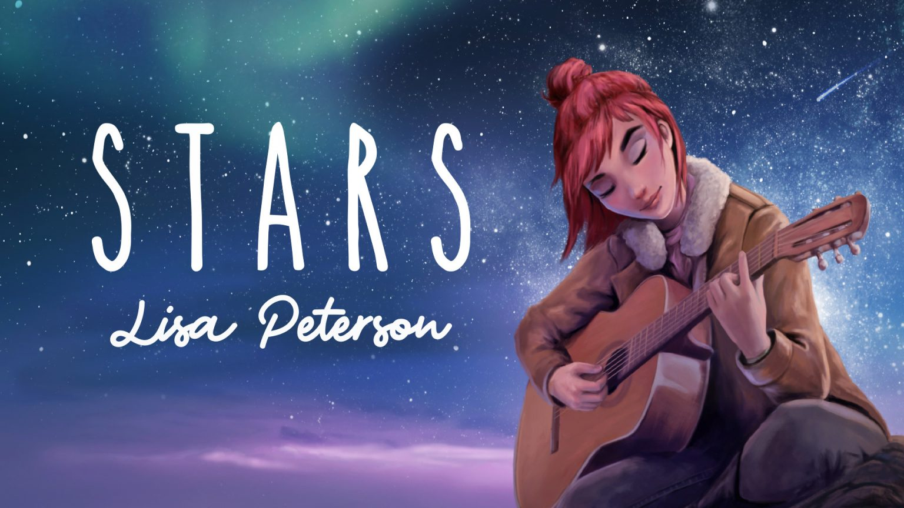

Lisa Peterson’s Stars reflects on her journey from her home in Texas to the island of Jorvik. Carl Peterson, Lisa’s father, was to work for Dark Core on an offshore rig following the untimely passing of his wife, Lisa’s mother, in a riding accident. Losing her mother left Lisa feeling restless and at odds with herself. Check out the lyrics, chords and the official music video for Stars below!
Official music video for Stars
